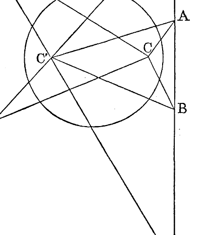

Book VI, Section VII: Theory of Poles and Polars, and Reciprocation¶
A Sequel to the First Six Books of the Elements of Euclid (5th ed., 1888, pp. 141–147)
f. 0167 · p. 141SECTION VII.¶
THEORY OF POLES AND POLARS, AND RECIPROCATION.¶
Prop. 1.—If four points be collinear, their anharmonic ratio is equal to the anharmonic ratio of their four polars.
This Proposition may be proved exactly the same as Proposition 8, Section III. Thus (see fig., Prop. 8, Section III.) the pencil $(O\,.\,A'B'C'D') = (P\,.\,A'B'C'D')$; but the pencil $(O\,.\,A'B'C'D') = \text{anharmonic ratio of the four points } A, B, C, D$, and the pencil $(P\,.\,A'B'C'D')$ consists of the four polars. Hence the Proposition is proved.
The two following Propositions are interesting applications of this Proposition:—
(1). If two triangles be self-conjugate with respect to a circle, any two sides are divided equianharmonically by the four remaining sides; and any two vertices are subtended equianharmonically by the four remaining vertices.
Let $ABC, A'B'C'$ be the two self-conjugate $\triangle\text{s}$; it is required to prove that the pencil $(C\,.\,ABA'B') = (C'\,.\,ABA'B')$.


Dem.—Let $A'C', B'C'$ meet $AB$ produced in $D$ and $E$. Join $A'C, B'C, AC', BC'$. Now, since $A'C'$ is the polar of $B'$, and $AB$ the polar of $C$, their point of intersection $D$ is the pole of $B'C$ (see Cor., Prop. 25, Section I., Book III.). In like manner, the point $E$ is the pole of $A'C$; hence the four points $B, A, E, D$ are the poles of the four lines $CA, CB, CA', CB'$. Therefore the anharmonic ratio of the four points $B$,
f. 0168 · p. 142$A, E, D$ is equal to the anharmonic ratio of the pencil $(C\,.\,ABA'B')$. Again, the points $B, A, E, D$ are the intersections of the line $AB$ with the pencil $(C\,.\,ABA'B')$; therefore the pencil $(C\,.\,ABA'B') = (C'\,.\,ABA'B')$.
We have proved the second part of our Proposition, and the first follows from it by the theorem of this Article.
(2). If two triangles be such that the sides of one are the polars of the vertices of the other, they are in perspective.
Dem.—Let the three sides of the $\triangle ABC$ be the polars of the corresponding vertices of the $\triangle A'B'C'$, and let the corresponding sides meet in the points $X, Y, Z$ respectively. Now, since $AB$ is the polar of $C'$, and $B'C'$ the polar of $A$, the point $D$ is the pole of $AC'$ (Cor., Prop. 25, Section I., Book III.). In like manner the point $X$ is the pole of $AA'$, and the points $B', C'$ are, by hypothesis, the poles of the lines $AC, AB$. Hence the pencil $(A\,.\,YZC'A') = \text{the pencil } (Z\,.\,YAC'A')$. Again, the anharmonic ratio $B'C'DX = \text{the pencil } (Z\,.\,A'C'AX) = (Z\,.\,XAC'A')$. Hence $(Z\,.\,YAC'A') = (Z\,.\,XAC'A')$; $\therefore$ the lines $XZ, ZY$ form one right line; therefore the intersection of corresponding sides of the triangles are collinear. Hence they are in perspective.
f. 0169 · p. 143Prop. 2.—If two variable points $A, A'$, one on each of two lines given in position, subtend an angle of constant magnitude at a given point $O$, the locus of the pole of the line $AA'$ with respect to a given circle $X$, whose centre is $O$, is a circle.
Dem.—Let $AI, A'I$ be the lines given in position, and let $B, B', Q$ be the poles of the three lines $AI, A'I$, and $AA'$ with respect to $X$; then the points $B, B'$ are fixed, and the lines $BQ, B'Q$ are the polars of the points $A, A'$; $\therefore$ the lines $OA, OA'$ are respectively $\perp$ to the lines $BQ, B'Q$; hence the $\angle BQB'$ is the supplement of the $\angle AOA'$; therefore $BQB'$ is a given angle, and the points $B, B'$ are fixed; therefore the locus of the point $Q$ is a circle.
Prop. 3.—For two homographic systems of points on two lines given in position there exist two points, at each of which the several pairs of corresponding points subtend equal angles.
Dem.—Let $A, A'$ be two corresponding points on the lines $AI, A'I$; and let $O, O'$ be the points on the lines $AI, A'I$ which correspond to the points at infinity on $A'I, AI$ respectively; then (see Prop. 10, Section IV., Book VI.) the rectangle $OA \cdot O'A' = \text{constant, say } k^2$. Join $OO'$, and describe the triangle $OEO'$ (see Prop. 15, Section I., Book VI.) having the rectangle $OE \cdot O'E$ of its sides $= k^2$, and having the difference of its base $\angle\text{s}$ equal difference of base $\angle\text{s}$ of the $\triangle OIO'$. Then $E$, the vertex of this $\triangle$, will be one of the points required. For it is evident from the construction that $OE \cdot O'E = OA \cdot O'A'$, and that the $\angle AOE = A'O'E$;
f. 0170 · p. 144$\therefore$ the $\triangle\text{s } AOE, A'O'E$ are equiangular; $\therefore$ the $\angle OAE = A'EO'$; $\therefore$ if the points $A, A'$ change position, the lines $EA, EA'$ will revolve in the same direction, and through equal angles. Hence the $\angle AEA'$ is constant.
In the same manner, another point $F$ can be found on the other side of $OO'$ such that the $\angle AFA'$ is constant.
Cor. 1.—Since the line $AA'$ subtends a constant angle at $E$, the locus of the pole of $AA'$ with respect to a circle whose centre is $E$ is a circle. Hence the properties of lines joining corresponding points on two lines divided homographically may be inferred from the properties of a system of points on a circle.
Cor. 2.—Since when $A'$ goes to infinity $A$ coincides with $O$, then $OA$ is one of the lines joining corresponding points. And so in like manner is $O'A'$, and the poles of these lines will be points on the circle which is the locus of the pole of $AA'$.
Cor. 3.—The locus of the foot of the perpendicular from $E$ on the line $AA'$ is a circle, namely, the inverse of the circle which is the locus of the pole of $AA'$.
Cor. 4.—If two lines be divided homographically, any four lines joining corresponding points are divided equianharmonically by all the remaining lines joining corresponding points. This follows from the fact that any four points on a circle are subtended equianharmonically by all the remaining points of the circle.
Prop. 4.—If any figure $A$ be given, by taking the pole of every line, and the polar of every point in it with respect to any arbitrary circle $X$, we can construct a new figure $B$, which is called the reciprocal of $A$ with respect to $X$. Thus we see that to any system of collinear points or concurrent lines of $A$ there will correspond a system of concurrent lines or collinear points of $B$; and to any pair of lines divided homographically in $A$ there will correspond in $B$ two homographic pencils of lines. Lastly, the angle which any two points of $A$ subtend at the centre of the reciprocating circle is equal to the angle made by their polars in $B$.
f. 0171 · p. 145Hence it is evident that, from theorems which hold for $A$, we can get other theorems which are true for $B$. This method, which is called reciprocation, is due to Poncelet, and is one of the most important known to Geometers.
We give a few Theorems proved by this method:—
(1). Any two fixed tangents to a circle are cut homographically by any variable tangent.
Dem.—Let $AT, BT$ be the two fixed tangents touching the circle at the fixed points $A$ and $B$, and $CD$ a variable tangent touching at $P$. Join $AP, BP$. Now $AP$ is the polar of $C$, and $BP$ the polar of $D$; and if the point $P$ take four different positions, the point $C$ will take four different positions, and so will the point $D$; and the anharmonic ratio of the four positions of $C$ equal the anharmonic ratio of the pencil from $A$ to the four positions of $P$ (Prop. 1). Similarly the anharmonic ratio of the four positions of $D$ equal the anharmonic ratio of the pencil from $B$ to the four positions of $P$; but the pencil from $A$ equal the pencil from $B$; therefore the anharmonic ratio of the four positions of $C$ equal the anharmonic ratio of the four positions of $D$.
(2). Any four fixed tangents to a circle are cut by any fifth variable tangent in four points whose anharmonic ratio is constant.
Dem.—The lines joining the point of contact of the variable tangent to the points of contact of the fixed tangents are the polars of the points of intersection of the variable tangent with the fixed tangents; but the anharmonic ratio of the pencil of four lines from a variable point to four fixed points on a circle is constant; hence the anharmonic ratio of their four poles—that is, of the four points in which the variable tangent cuts the fixed tangent—is constant.
f. 0172 · p. 146(3). Lines drawn from any variable point in the plane of a quadrilateral to the six points of intersection of its four sides form a pencil in involution.
This Proposition is evidently the reciprocal of (1), Prop. 9, Section VI.
(4). If two vertices of a triangle move on fixed lines, while the three sides pass through three collinear points, the locus of the third vertex is a right line. Hence, reciprocally, If two sides of a triangle pass through fixed points, while the vertices move on three concurrent lines, the third side will pass through a fixed point.
(5). To describe a triangle about a circle, so that its three vertices may be on three given lines. This is solved by inscribing in the circle a triangle whose three sides shall pass through the poles of the three given lines, and drawing tangents at the angular points of the inscribed triangle.
This is the reciprocal of Pascal's Theorem: we prove it as follows:—
Let $ABCDEF$ be the circumscribed hexagon; the three diagonals $AD, BE, CF$ are concurrent. For, let
f. 0173 · p. 147the points of contact be $G, H, I, J, K, L$. Now since $A$ is the pole of $GH$, and $D$ is the pole of $JK$, the line $AD$ is the polar of the point of intersection of the opposite sides $GH$ and $JK$ of the inscribed hexagon. In like manner, $BE$ is the polar of the point of intersection of the lines $HI, KL$, and $CF$ the polar of the point of intersection of $IJ$ and $LG$; but the intersections of the three pairs of opposite sides of the inscribed hexagon, viz., $GH, JK$; $HI, KL$; $IJ, LG$, are, by Pascal’s Theorem, collinear; therefore their three polars $AD, BE, CF$, are concurrent.
(7). If two lines be divided homographically, two lines joining homologous points can be drawn, each of which passes through a given point.
For, if $AA'$ (see fig., Prop. 3) pass through a given point $P$, join $EP$, and let fall a $\perp EG$ on $AA'$; then (Cor. 2, Prop. 3) the locus of the point $G$ is a $\odot$; and since $EGP$ is a right angle, the $\odot$ described on $EP$ as diameter passes through $G$; hence $G$ is the point of intersection of two given $\odot\text{s}$; and since two $\odot\text{s}$ intersect in two points, we see that two lines joining homographic points can be formed, each passing through $P$. Now, if we reciprocate the whole diagram with respect to a circle whose centre is $P$, the reciprocals of the points $A, A'$ will be parallel lines. Hence we have the following theorem in a system of two homographic pencils of rays:—There exist two pairs of homologous rays which are parallel to each other.
Cor.—There are two directions in which transversals can be drawn, intersecting two homographic pencils of rays so as to be divided proportionally, namely, parallel to the pairs of homologous rays which are parallel.